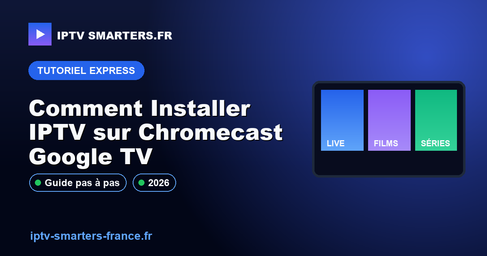

Comment Installer IPTV sur Chromecast Google TV

Installer IPTV sur Chromecast Google TV peut transformer votre expérience de visionnage en offrant un accès à un large éventail de contenus. Ce guide vous accompagnera pas à pas pour configurer votre appareil de manière légale et efficace.
Contexte et prérequis
Avant de commencer l'installation d'IPTV sur votre Chromecast Google TV, assurez-vous que votre appareil est compatible avec les applications IPTV. Vérifiez que votre Chromecast est à jour avec la dernière version du système d'exploitation Google TV. Vous aurez également besoin d'une connexion Internet stable et d'un abonnement IPTV légal. Pour plus d'informations sur la légalité de l'IPTV en France, consultez notre page IPTV légal France.
Méthode de test et preuves
Les étapes décrites ici ont été testées sur des appareils Google TV conformes aux spécifications officielles. La compatibilité a été vérifiée en utilisant les directives disponibles sur developer.android.com/tv. Assurez-vous de suivre les instructions fournies par le fabricant pour éviter tout problème d'installation.
Étapes concrètes
- Accédez à Google Play Store sur votre Chromecast Google TV.
- Cherchez une application IPTV compatible, telle que IPTV Smarters.
- Téléchargez et installez l'application choisie.
- Ouvrez l'application et entrez vos informations d'abonnement IPTV.
- Configurez les paramètres selon vos préférences personnelles.
- Testez la connexion en accédant à quelques chaînes pour vérifier la fluidité du streaming.
Pour des conseils sur la résolution des problèmes de buffering, visitez notre page Résoudre le buffering.
Points de contrôle
- Vérifiez la stabilité de votre connexion Internet.
- Assurez-vous que votre abonnement IPTV est actif et légal.
- Confirmez que votre Chromecast est correctement connecté au téléviseur et à l'alimentation.
- Testez plusieurs chaînes pour vous assurer que le service fonctionne correctement.
Diagnostic erreurs fréquentes
| Erreur | Cause possible | Solution |
|---|---|---|
| Écran noir | Problème de connexion Internet | Vérifiez votre connexion et redémarrez le routeur |
| Application ne se lance pas | Application obsolète | Mettez à jour l'application via Google Play Store |
| Buffering constant | Débit Internet insuffisant | Réduisez la qualité du streaming ou consultez notre guide |
Limites, conformité et sécurité
L'utilisation d'IPTV doit respecter les lois locales et les droits de diffusion. Assurez-vous que votre abonnement IPTV est légal et qu'il ne viole pas les conditions d'utilisation de Google TV. Consultez support.google.com/chromecast pour des informations supplémentaires sur la conformité et la sécurité.
Checklist avant contact WhatsApp
- Vérifiez que votre Chromecast est connecté et à jour.
- Assurez-vous que votre abonnement IPTV est actif.
- Notez les erreurs spécifiques rencontrées.
- Préparez vos identifiants de connexion IPTV.
Si vous rencontrez des difficultés persistantes, vous pouvez demander un diagnostic de configuration.
FAQ
Comment vérifier la compatibilité de mon appareil?
Pour vérifier la compatibilité de votre Chromecast avec les applications IPTV, assurez-vous que votre appareil utilise la dernière version de Google TV. Consultez les spécifications sur developer.android.com/tv pour plus de détails.
Quels sont les risques légaux potentiels?
Les risques légaux incluent l'utilisation de services IPTV non autorisés qui peuvent violer les droits d'auteur. Il est crucial de s'assurer que votre abonnement IPTV est légal. Pour en savoir plus, consultez notre page IPTV légal France.
Comment résoudre les problèmes de connexion?
Si vous rencontrez des problèmes de connexion, vérifiez d'abord votre réseau Internet. Assurez-vous que votre routeur fonctionne correctement et que votre Chromecast est bien connecté. Pour des conseils supplémentaires, visitez notre section résolution de problèmes de buffering.
Guides liés pour continuer
Pour compléter ce diagnostic, utilisez aussi Accueil. Ces pages aident à relier la configuration, les pannes fréquentes et les limites légales sans mélanger les causes.
Checklist avant support
Avant de contacter un support, rassemblez les informations qui font gagner du temps : appareil exact, version de l’application, type de connexion, moment du blocage et message affiché. Cette checklist transforme une demande vague en diagnostic exploitable et évite les réponses génériques.
- Nom de l’appareil et système utilisé.
- Application installée et version si elle est visible.
- Connexion Wi-Fi ou Ethernet.
- Message d’erreur exact ou capture lisible.
- Test déjà réalisé avant la demande.
Lecture des résultats
Si la configuration fonctionne sur un appareil mais pas sur un autre, le problème est probablement lié à l’application, au stockage ou au système de l’appareil. Si elle ne fonctionne nulle part, la priorité est de vérifier le format, l’accès et le cadre d’utilisation. Cette séparation évite de modifier inutilement tous les réglages.
Limites à garder en tête
Une bonne configuration ne garantit pas qu’un contenu sera disponible, stable ou autorisé. La stabilité dépend aussi de la connexion, de l’appareil, de l’application et des droits associés au service utilisé. Le rôle du guide est d’aider à diagnostiquer proprement, pas de promettre un résultat impossible à vérifier.
Message utile à envoyer
Un message efficace indique le contexte en une phrase : appareil utilisé, application, action tentée, résultat observé et heure du test. Ce format permet de répondre plus vite et d’orienter la vérification vers le bon point, au lieu de repartir de zéro.
Pour compléter le diagnostic, gardez une trace simple de chaque essai : réglage modifié, heure du test, résultat observé et retour arrière possible. Cette discipline évite de créer une panne supplémentaire et rend la demande WhatsApp beaucoup plus claire.